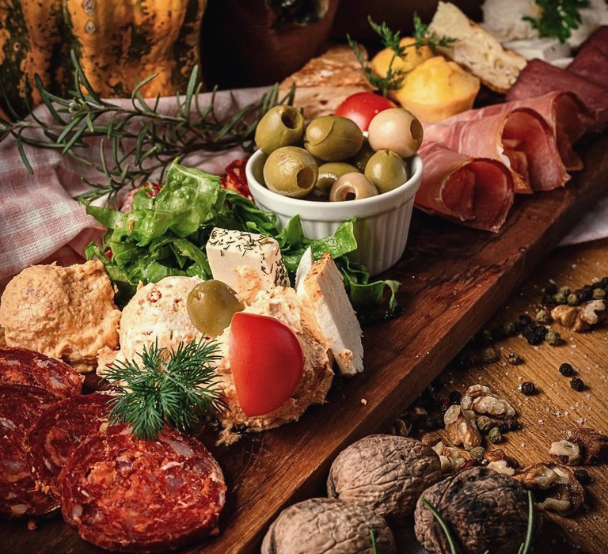
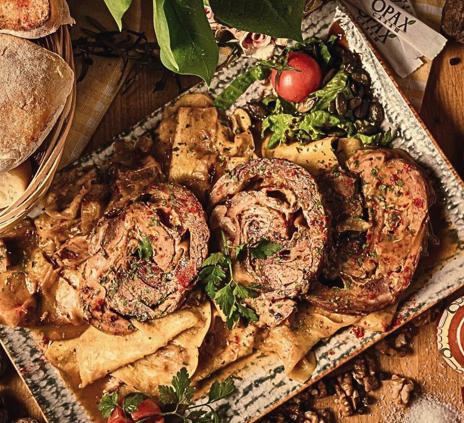
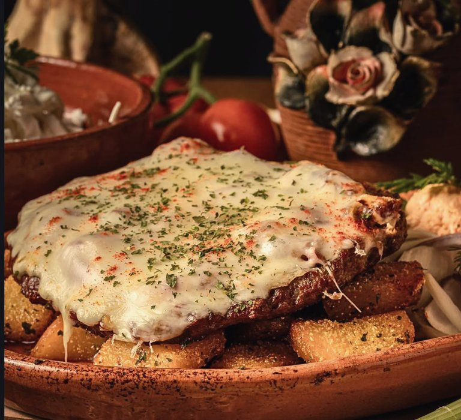
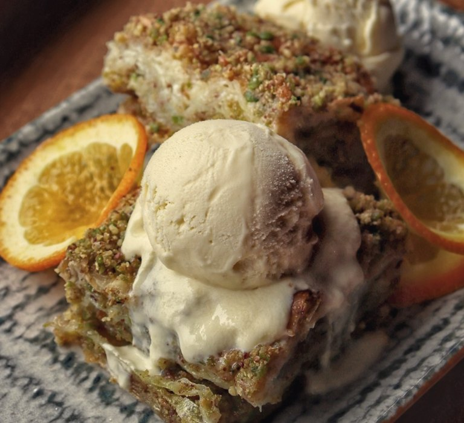
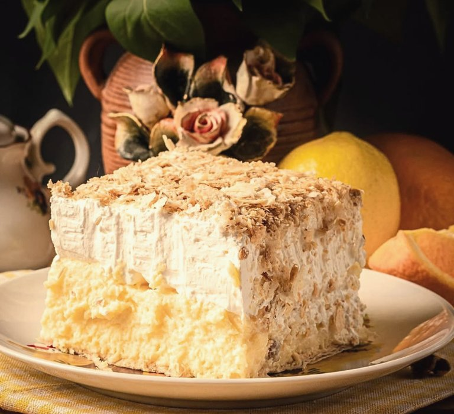
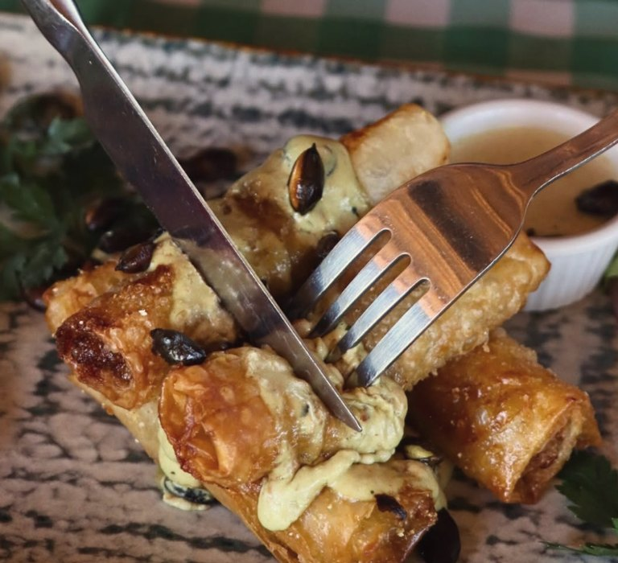

Доручак
Јаја на око450
Јаја са сланином490
Јаја са кобасицом490
Јаја са домаћом шунком490
Омлет са сиром480
Омлет са домаћом шунком490
Омлет са поврћем480
Слане моче470
Слатке моче390
Пита са сиром360
Проја360
Качамак420
Салашарска лепиња420
Салашарска лепиња са куленом490
Салашарска лепиња са буткицом490
Салашарска лепиња са чварцима490
Орах доручак750
Попара390
Туна салата750
Супе и чорбе
Телећа чорба420
Домаћа супа од морке380
Парадајз чорбапосно380
Потаж данапосно380
Предјела
Салашарска даска за двоје1450
Гушчији залогај880
Бифтек ролнице880
Гриловани сир790
Пуњена похована паприка650
Плата сирева930
Пилећа паштета490



Готова јела
цена: цела порција / пола порције
Јунећи гулаш970
Салашарски гулаш880
Чорбаст пасуљ770
Пасуљ пребранацпосно770 / 550
Пасуљ пребранац са кобасицом840 / 590
Пасуљ пребранац са буткицом940 / 660
Сарма · сезонски880 / 620
Подварак720 / 510
Подварак са димљеном буткицом940 / 660
Подварак са кобасицом940 / 660
Мућкалица са свињским вратом890 / 630
Мућкалица са димљеним батаком890 / 630
Сармице у зељу са киселим млеком890
Посне сармицепосно770
Пуњена паприка · сезонски880 / 620
Мусака880
Пилећа џигерица890
Салашарска јунећа џигерица890
Јунећи рибић у сафту1550
Роштиљ
Ћевапи1080
Батина пљескавица1250
Бело месо на жару880
Димљени батак990
Свињски врат на жару1090 / 770
Орах даска2800
Роштиљ кобасица990
Јунећи уштипак1250
Јела по поруџбини
цена: цела порција / пола порције
Салашарски врат1190
Ћурка у сосу од сира1290 / 910
Коленица у сосу од кајмака и рена1350 / 950
Ћуретина са млинцима1290 / 910
Бифтек2150
Пилећи пакетићи1290 / 910
Телећи сач1980
Ребра у барбекју сосу1350
Јагњећи сач1980
Ролована телетина1880
Риба
Димљена пастрмка4500 / кг
Шаран2950 / кг
Лосос1950 / 300 г
Шаран у рашљама · по поруџбини3900 / кг
Мени за двоје
Телећа коленица · викенд понуда3850
Кобасица са пиреом2350
Дечији мени
Ћевапи700
кромпирићи и прилог
Бело месо на жару600
кромпирићи и прилог
Домаћа супица270
Салате
Печена паприка370
Печена љута паприка210
Кисели купус300
Туршија320
Попај салата420
Таратор салата370
Парадајз салата340
Српска салата340
Шопска салата380
Микс салата350
Купус салата340
Краставац салата320
Мешана салата350
Моравска салата440
Парадајз салата са сиром380
Зелена салата350
Паприка у павлаци440
Цвекла350



Додаци
Ајвар350
Кајмак350
Пире кромпир370
Кромпир370
Гриловано поврће370
Урнебес350
Кечап150
Кувер110
Дезерти
Кремпита420
Баклава420
Пита са боровницама420
Три леће420
Салашарска баклава са пистаћима470
Чоко колач420
Шненокле420
Сладолед320